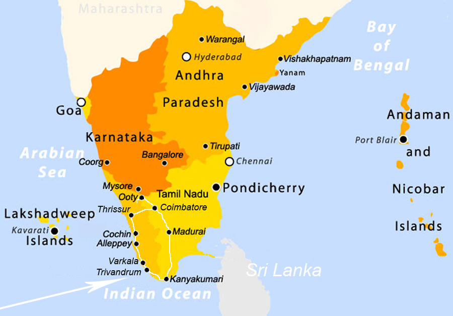

Kerala & Tamil Nadu - Dec 2003 / Jan 2004
A flight to Trivandrum (via Doha in Qatar) took us straight to the hustle and bustle of South India. Taking a "computer cab" (ie: a man with a bit of paper) we hurtled the 100km or so from the airport to Varkala, narrowly avoiding elephants and camels to arrive at our accommodation - the Government Guest House on Christmas Eve 2003. to
Click on any place on the white itinerary line for a direct link to that page - or click the forward and back arrows to navigate the site.
